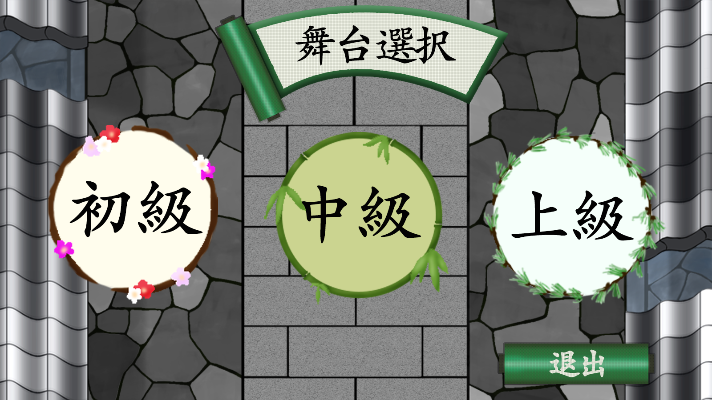
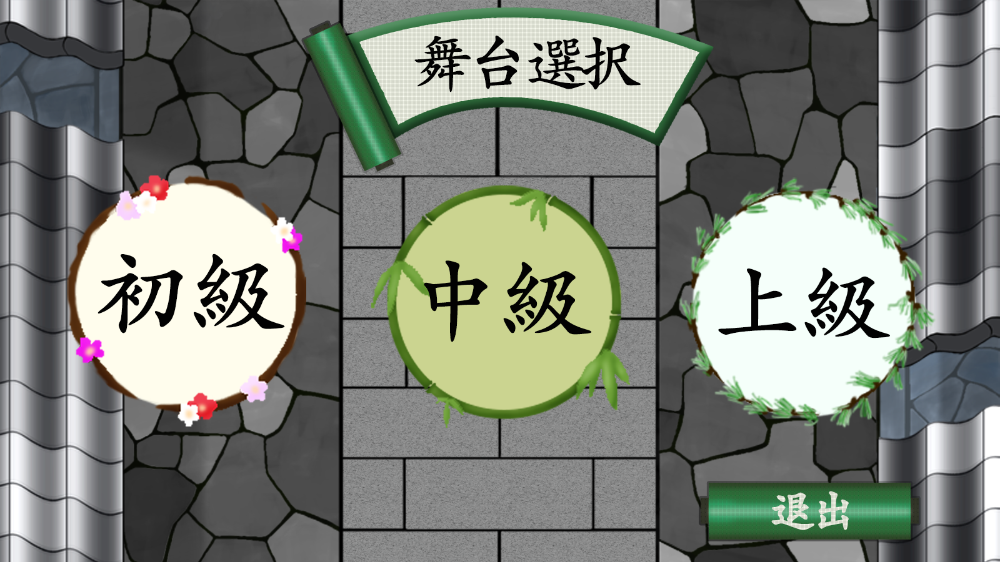

2D
制作期間２カ月 ２０１７ゲーム大賞応募作品になります。はさむがテーマの今回、岡っ引きさんを操作して不届き物を挟んで倒すゲームになっています。今回はPhotoshopとunityを用いたプログラマー６人、デザイナー２人による２Dのゲーム制作となりました。中々２Dのゲーム制作をすることがなかったのでとても勉強になったゲーム制作でした。 

 現在リリースに向けクオリティアップ中！
現在リリースに向けクオリティアップ中！
その他２D作品


2D
制作期間２カ月 ２０１７ゲーム大賞応募作品になります。はさむがテーマの今回、岡っ引きさんを操作して不届き物を挟んで倒すゲームになっています。今回はPhotoshopとunityを用いたプログラマー６人、デザイナー２人による２Dのゲーム制作となりました。中々２Dのゲーム制作をすることがなかったのでとても勉強になったゲーム制作でした。 その他２D作品